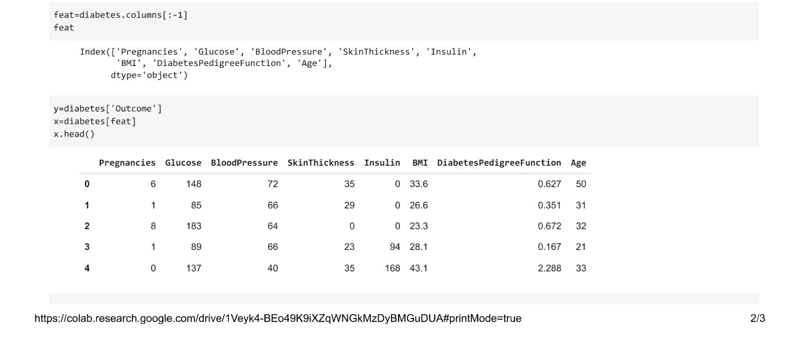

Perceptron
A perceptron is a fundamental building block in artificial neural networks, inspired by the way biological neurons work in the human brain. It was developed by Frank Rosenblatt in 1957 and can be considered the simplest form of a neural network. The perceptron is particularly useful for binary classification problems, where it learns to classify inputs into two categories.
Here's an elaborated explanation of the perceptron:
### Structure of a Perceptron:
1. **Inputs (x1, x2, ..., xn):**
- The perceptron takes multiple binary inputs (0 or 1).
- Each input is associated with a weight (w1, w2, ..., wn), which represents the strength of the connection.
2. **Weighted Sum:**
- The inputs are multiplied by their corresponding weights.
- These weighted inputs are summed up.
\[ \text{weighted sum} = w1 \cdot x1 + w2 \cdot x2 + \ldots + wn \cdot xn \]
3. **Activation Function:**
- The weighted sum is then passed through an activation function.
- The activation function determines whether the perceptron should "fire" (output 1) or not (output 0).
- The step function is commonly used as the activation function in a perceptron.
\[ \text{output} = \begin{cases} 1 & \text{if weighted sum} \geq \text{threshold} \\ 0 & \text{otherwise} \end{cases} \]
### Learning in a Perceptron:
1. **Initialization:**
- Initially, the weights are set to small random values.
2. **Training:**
- During the training process, the perceptron is presented with input patterns, and its output is compared to the expected output.
- If the perceptron misclassifies an input, the weights are adjusted to reduce the error.
- The adjustment is done using the perceptron learning rule, which involves updating each weight based on the error, input, and a learning rate.
\[ \text{new weight} = \text{old weight} + \text{learning rate} \times \text{error} \times \text{input} \]
3. **Iteration:**
- The training process is repeated with different input patterns until the perceptron learns to correctly classify the training data.
### Limitations of a Single Perceptron:
- **Linearity:**
- A single perceptron can only learn linear decision boundaries.
- It struggles with problems that require non-linear decision boundaries.
- **Binary Output:**
- The output of a perceptron is binary (0 or 1), making it unsuitable for tasks that require probabilistic outputs.
### Applications:
- **Binary Classification:**
- Perceptrons are commonly used for binary classification tasks, such as spam detection or simple decision-making problems.
- **Logical Operations:**
- Perceptrons can be used to model logical operations like AND, OR, and NOT.
### Perceptron vs. Neural Networks:**
- **Single Layer vs. Multiple Layers:**
- A perceptron represents a single-layer neural network, while more complex problems often require multiple layers (multilayer perceptrons or neural networks).
- **Hierarchy of Features:**
- Neural networks with multiple layers can learn hierarchical features, enabling them to handle more intricate patterns and relationships in data.
In summary, a perceptron is a basic unit in neural networks, serving as a binary classifier. While it has limitations, understanding the perceptron lays the foundation for more complex neural network architectures capable of solving a broader range of problems.

K-Nearest Neighbors (KNN): A Comprehensive Overview
K-Nearest Neighbors, or KNN, is a simple and versatile algorithm used for both classification and regression tasks in machine learning. It belongs to the category of supervised learning algorithms where the model is trained on a labeled dataset to make predictions on new, unseen data. KNN is a non-parametric and instance-based learning algorithm, meaning it makes predictions based on the similarity of instances in the feature space.
### Key Concepts:
1. **Distance Metric:**
- KNN relies on a distance metric to measure the similarity between instances. The most common metric is Euclidean distance, but other metrics such as Manhattan distance or Minkowski distance can also be used.
2. **K-Nearest Neighbors:**
- The "K" in KNN refers to the number of nearest neighbors considered for making predictions.
- The algorithm identifies the K training instances with the closest feature values to the input data point.
3. **Voting (Classification) or Averaging (Regression):**
- For classification tasks, the class labels of the K nearest neighbors are used for a majority vote to determine the class of the new instance.
- For regression tasks, the algorithm averages the target values of the K nearest neighbors to predict a continuous value.
### KNN Workflow:
1. **Training:**
- KNN does not involve an explicit training phase. The model simply stores the labeled instances of the training dataset.
2. **Prediction:**
- To make a prediction for a new instance, the algorithm calculates the distances to all instances in the training set.
- It identifies the K nearest neighbors based on the chosen distance metric.
- For classification, it assigns the class label by majority vote; for regression, it calculates the average of the target values.
### Hyperparameter: K
The choice of the value of K is a crucial aspect of using KNN. A small value of K can lead to a noisy prediction, being sensitive to outliers, while a large value of K may result in overly smooth predictions, potentially overlooking local patterns.
### Strengths of KNN:
1. **Simplicity and Intuitiveness:**
- KNN is easy to understand and implement, making it an excellent choice for beginners.
2. **Versatility:**
- KNN can be applied to both classification and regression problems.
3. **No Training Period:**
- The model does not require a lengthy training period, as it simply memorizes the training data.
4. **Adaptability to Different Data Distributions:**
- KNN can adapt well to various types of data distributions.
### Limitations of KNN:
1. **Computational Cost:**
- Calculating distances to all instances in the dataset can be computationally expensive, especially for large datasets.
2. **Sensitive to Outliers:**
- KNN can be sensitive to outliers or irrelevant features, impacting its performance.
3. **Curse of Dimensionality:**
- In high-dimensional spaces, the distance between instances may become less meaningful, leading to a decrease in performance.
4. **Need for Feature Scaling:**
- Feature scaling is crucial as KNN is sensitive to the scale of features.
### Applications:
1. **Image and Speech Recognition:**
- KNN is used in image and speech recognition systems for its ability to handle complex patterns.
2. **Medical Diagnosis:**
- In healthcare, KNN is applied for disease diagnosis based on patient features.
3. **Recommendation Systems:**
- KNN is employed in recommendation systems to suggest items based on user preferences.
4. **Anomaly Detection:**
- It is used to identify anomalous instances in various domains.
In conclusion, K-Nearest Neighbors is a versatile algorithm suitable for various applications. Its simplicity and effectiveness make it a valuable tool, especially in scenarios where interpretability and ease of implementation are essential. However, careful consideration of the choice of the distance metric and the value of K is crucial to achieving optimal results.

Decision Trees: A Comprehensive Overview
A Decision Tree is a versatile and widely used algorithm in machine learning that is employed for both classification and regression tasks. Its structure resembles a tree, where each internal node represents a decision based on a specific feature, each branch represents an outcome of that decision, and each leaf node represents the final predicted outcome. Decision Trees are known for their interpretability, simplicity, and ability to handle both numerical and categorical data.
### Key Concepts:
1. **Nodes:**
- **Root Node:** The topmost node that represents the initial decision.
- **Internal Node:** Nodes that represent decisions based on specific features.
- **Leaf Node:** Terminal nodes that provide the final predicted outcome.
2. **Edges:**
- The branches connecting nodes represent the outcomes of decisions.
3. **Decision Criteria:**
- At each internal node, a decision is made based on a feature to split the data into subsets.
4. **Leaf Output:**
- Each leaf node holds the predicted outcome for instances that reach it.
### Decision Tree Workflow:
1. **Feature Selection:**
- The algorithm selects the most informative feature at each internal node to split the data.
2. **Splitting:**
- The dataset is divided into subsets based on the chosen feature.
3. **Recursive Process:**
- The process of feature selection and splitting is applied recursively to create a tree structure.
4. **Stopping Criteria:**
- The tree-growing process continues until a predefined stopping criteria are met, such as a certain depth or a minimum number of instances in a node.
### Splitting Criteria:
1. **Gini Impurity (for Classification):**
- Measures the likelihood of misclassifying a randomly chosen element.
- A lower Gini impurity indicates a more pure split.
2. **Entropy (for Classification):**
- Measures the amount of information or disorder in a set.
- Lower entropy implies a more certain or pure split.
3. **Variance Reduction (for Regression):**
- Measures the reduction in variance after a split.
- A larger reduction indicates a better split.
### Pruning:
To avoid overfitting, Decision Trees can be pruned after the initial construction:
- **Pre-Pruning:** Stop the tree-building process early based on a set criteria.
- **Post-Pruning:** Remove branches or nodes from the fully grown tree after construction.
### Strengths of Decision Trees:
1. **Interpretability:**
- Decision Trees are easy to understand and interpret, making them suitable for explaining complex decision-making processes.
2. **Handle Mixed Data Types:**
- Decision Trees can handle both numerical and categorical features without requiring extensive preprocessing.
3. **Nonlinear Relationships:**
- They can model nonlinear relationships in data.
4. **Feature Importance:**
- Decision Trees provide information about feature importance, helping in feature selection.
### Limitations of Decision Trees:
1. **Overfitting:**
- Decision Trees can easily overfit the training data, capturing noise instead of underlying patterns.
2. **Instability:**
- Small changes in the data can lead to significant changes in the structure of the tree.
3. **Biased to Dominant Classes:**
- In classification tasks with imbalanced classes, Decision Trees may be biased towards the dominant class.
### Applications:
1. **Classification:**
- Identifying spam emails, classifying diseases, etc.
2. **Regression:**
- Predicting house prices, stock prices, etc.
3. **Feature Selection:**
- Identifying the most important features in a dataset.
4. **Anomaly Detection:**
- Identifying outliers or anomalies in data.
In summary, Decision Trees are powerful and intuitive algorithms with broad applications. While they have certain limitations, techniques like pruning and ensemble methods (Random Forests, Gradient Boosting) are commonly used to enhance their performance and address challenges such as overfitting. The interpretability and simplicity of Decision Trees make them valuable tools in various domains of machine learning.
Play Tennis DT
Naive Bayes Classifier: A Comprehensive Overview
The Naive Bayes classifier is a probabilistic machine learning algorithm that is widely used for classification tasks, especially in natural language processing and spam filtering. It is based on Bayes' theorem and assumes independence between the features, which is why it's called "naive." Despite its simplicity and the independence assumption, Naive Bayes often performs surprisingly well and is computationally efficient.
### Key Concepts:
1. **Bayes' Theorem:**
- The foundation of Naive Bayes is Bayes' theorem, which calculates the probability of a hypothesis based on the probability of observed evidence.
\[ P(A|B) = \frac{P(B|A) \cdot P(A)}{P(B)} \]
In the context of classification:
\[ P(C|X) = \frac{P(X|C) \cdot P(C)}{P(X)} \]
where \( C \) is the class, \( X \) is the input features, \( P(C|X) \) is the probability of class given the features, \( P(X|C) \) is the probability of features given the class, \( P(C) \) is the prior probability of the class, and \( P(X) \) is the evidence probability.
2. **Independence Assumption:**
- Naive Bayes assumes that all features are conditionally independent given the class.
- Despite this assumption rarely holding true in real-world data, Naive Bayes can still perform well.
### Types of Naive Bayes Classifiers:
1. **Gaussian Naive Bayes:**
- Assumes that features follow a Gaussian distribution. It is suitable for continuous data.
2. **Multinomial Naive Bayes:**
- Used for discrete data, such as text. It assumes that features represent the frequency of words in a document.
3. **Bernoulli Naive Bayes:**
- Similar to Multinomial Naive Bayes but designed for binary/boolean features.
### Naive Bayes Workflow:
1. **Training:**
- Estimate the prior probabilities \( P(C) \) for each class and the likelihood \( P(X|C) \) for each feature given the class, based on the training data.
2. **Prediction:**
- Use Bayes' theorem to calculate the probability of each class given the input features \( P(C|X) \).
- Assign the class with the highest probability as the predicted class.
### Strengths of Naive Bayes:
1. **Simplicity and Efficiency:**
- Naive Bayes is computationally efficient and straightforward to implement.
2. **Handles High-Dimensional Data:**
- Performs well even with a large number of features.
3. **Works Well with Small Datasets:**
- Effective when training data is limited.
4. **Handles Missing Data:**
- Can handle missing values in the dataset.
### Limitations of Naive Bayes:
1. **Independence Assumption:**
- The assumption of feature independence may not hold in real-world datasets.
2. **Zero Probability Issue:**
- If a feature-class combination is not observed in the training data, the likelihood becomes zero, impacting predictions. This issue is often addressed using techniques like Laplace smoothing.
### Applications:
1. **Text Classification:**
- Commonly used for spam detection and sentiment analysis.
2. **Document Classification:**
- Identifying the topic or category of a document.
3. **Medical Diagnosis:**
- Classifying diseases based on patient symptoms.
4. **Recommendation Systems:**
- Predicting user preferences based on historical data.
### Implementation Considerations:
1. **Handling Continuous Data:**
- For continuous data, Gaussian Naive Bayes is suitable.
2. **Handling Text Data:**
- For text classification, Multinomial or Bernoulli Naive Bayes is often used.
3. **Handling Imbalanced Data:**
- Techniques like oversampling or adjusting class priors can be applied.
In summary, the Naive Bayes classifier is a simple yet powerful algorithm, particularly suited for text and classification tasks. Despite its oversimplified assumption of feature independence, it often performs well in practice and is a popular choice for various applications due to its efficiency and ease of implementation.